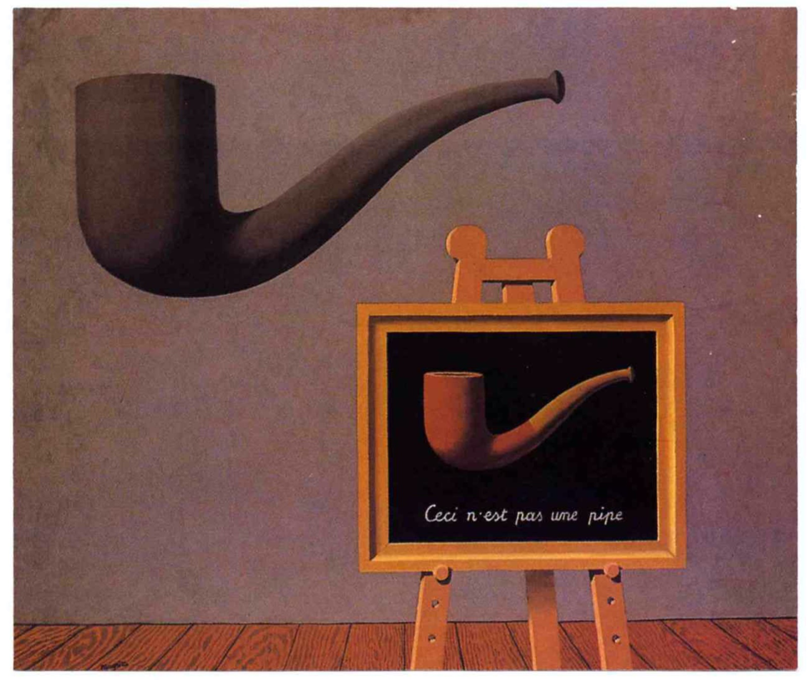
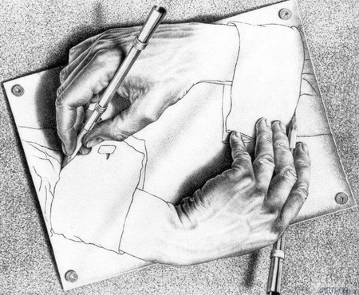
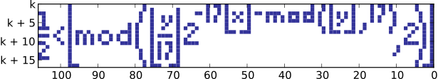

自指，自我指涉。指一个语句、思想或表达方式直接或间接地指向自身的性质。你可以在数学、逻辑、语言学、编程、艺术等领域见到它的身影。
自指的运用是非常普遍的，这里只提几个有趣的运用。
故事
从前有座山，山里有座庙，庙里一个老和尚在给小和尚讲故事，内容是“从前有座山，山里有座庙，庙里一个老和尚在给小和尚讲故事，内容是“从前有座山……
废话文学
提醒：这是一个提醒。
悖论
说谎者悖论：我现在说的这句话是谎话。
理发师悖论：小城里的理发师放出豪言：他要为城里人刮胡子，而且一定只要为城里所有“不为自己刮胡子的人”刮胡子。理发师该为自己刮胡子吗？
罗素悖论：如果存在一个集合A={x|x∉A}，那么A∈A是否成立？
罗素提出的这个悖论动摇的数学的根基之一——集合论，导致第三次数学危机。这使得弗雷格只能在他刚要出版的《算术的基本法则》第2卷末尾写道：“一个科学家所遇到的最不合心意的事莫过于在他的工作结束时，其基础崩溃了。罗素先生的一封信正把我置于这个境地”。后来的策梅洛-弗兰克尔公理系统中，通过分离公理禁止了罗素悖论中这种无限自指的集合的存在。
元图像


元游戏
元游戏没有准确的定义，这里特指“知道自己是游戏的游戏”。
刑侦推理题
这道题曾经在网上流行。
以下全部是单选题。
| 1.这道题的答案是（） | |||
| A.A | B.B | C.C | D.D |
| 2.第五题的答案是（） | |||
| A.C | B.D | C.A | D.B |
| 3.以下选项中哪一题的答案与其他三项不同（） | |||
| A.第3题 | B.第6题 | C.第2题 | D.第4题 |
| 4.以下选项中哪两题的答案相同（） | |||
| A.第1,5题 | B.第2,7题 | C.第1,9题 | D.第6,10题 |
| 5.以下选项中哪一题的答案与本题相同（） | |||
| A.第8题 | B.第4题 | C.第9题 | D.第7题 |
| 6.以下选项中，哪两题的答案与第8题相同（） | |||
| A.第2,4题 | B.第1,6题 | C.第3,10题 | D.第5,9题 |
| 7.此十题中，被选中次数最少的选项字母是（） | |||
| A.C | B.B | C.A | D.D |
| 8.以下选项中哪一题的答案与第1题的答案在字母中不相邻（） | |||
| A.第7题 | B.第5题 | C.第2题 | D.第10题 |
| 9.已知“第1题与第6题的答案相同”与“第X题与第5题的答案相同”的真实性相反，那么X为（） | |||
| A.第6题 | B.第10题 | C.第2题 | D.第9题 |
| 10.在此10道题中，ABCD四个字母出现次数最多与最少者的差为（） | |||
| A.3 | B.2 | C.4 | D.1 |
解答
这道题目前没有找到足够优秀且优雅的解法，这里只提供一种笔者找到的较为简介的解法。
首先尝试找到容易入手的地方。
9题的题干提出两种可能性，可以分别讨论：
- 假设1、6题答案相同，X、5题答案不同
2、5题答案显然不同。9题答案必是C。因为是单选，所以9题其他的选项都错误，即6、9、10题和5题答案相同，都是C。由6题选C知3、8、10题答案相同，都是C。之后持续进行类似的推理，可得到矛盾。 - 所以1、6题答案不同，X、5题答案相同。
- 接下来讨论5题：
- 5题不选D：假设5题选D，即5、7题答案相同，都是D。根据7题知D是被选中最少的字母，所以A、B、C的数量都至少是3个，再加上已经被选中两次的D，四个字母选中次数总和超过10，矛盾。
- 5题不选B：假设5题选B，即5、4题答案相同，都是B。根据4题知2、7题答案一样。和上一条用类似方法能推出矛盾。
- 5题不选C：5、9题有共同的选项“第9题”，假设5、9题答案相同，那么5题只能选C，9题只能选D，这和“5、9题答案相同”矛盾。所以5、9题答案不同，5题不选C，9题不选D。
- 5题选A。进而2题选C，8题选A
- 接下来可以讨论6题：
- 6题不选A：若选A，则2、4、8题答案相同，和“2题选C，8题选A”矛盾
- 6题不选B：前已推出“1、6题答案不同”。
- 6题不选D：前已推出“5、9题答案不同”。
- 6题选C。
- 接下来可以讨论9题。之后都是简单推理，略。
- 接下来可以讨论6题：
- 接下来讨论5题：
答案：BCACACDABA。
Tupper自指公式
由杰夫·塔珀发现。
${1\over 2} < \left\lfloor \mathrm{mod}\left(\left\lfloor {y \over 17} \right\rfloor 2^{-17 \lfloor x \rfloor - \mathrm{mod}(\lfloor y\rfloor, 17)},2\right)\right\rfloor$
如果 k=960 939 379 918 958 884 971 672 962 127 852 754 715 004 339 660 129 306 651 505 519 271 702 802 395 266 424 689 642 842 174 350 718 121 267 153 782 770 623 355 993 237 280 874 144 307 891 325 963 941 337 723 487 857 735 749 823 926 629 715 517 173 716 995 165 232 890 538 221 612 403 238 855 866 184 013 235 585 136 048 828 693 337 902 491 454 229 288 667 081 096 184 496 091 705 183 454 067 827 731 551 705 405 381 627 380 967 602 565 625 016 981 482 083 418 783 163 849 115 590 225 610 003 652 351 370 343 874 461 848 378 737 238 198 224 849 863 465 033 159 410 054 974 700 593 138 339 226 497 249 461 751 545 728 366 702 369 745 461 014 655 997 933 798 537 483 143 786 841 806 593 422 227 898 388 722 980 000 748 404 719
在 $0≤x<106$ 和 $k≤y<k+17$ 范围中将符合以上不等式的点 $(x, y)$ 绘制出来，结果是：

尝试理解这个公式：
$\left\lfloor a \right\rfloor$表示对$a$向下取整。
简化公式：${1\over 2} < \left\lfloor \mathrm{mod}\left(\left\lfloor {n \over 17} \right\rfloor 2^{-17 m - \mathrm{mod}(n, 17)},2\right)\right\rfloor$，其中$m, n$为整数。
下面开始逐个区域分析这个表达式：
- 分析$17m+\mathrm{mod}\left(n, 17\right)$，其中左半部分结果为$0$或$17$的倍数，右半部分结果为$[0,16]$内的整数。考虑到$m$和$n$的定义域，表达式的值域为$[0,1801]$内的所有整数。
- 分析$\left\lfloor {n \over 17} \right\rfloor$，通过$n$的范围知，其值是固定的$k \over 17$。
- 分析$a·2^{-b}$，这个表达式的作用为将$a$的二进制形式的小数点左移$b$位。举例：$9×2^{-2}=2.25$，$9$的二进制形式为$1001$，小数点左移两位得$10.01$，即$2.25$。所以$\left\lfloor {n \over 17} \right\rfloor 2^{-17 m - \mathrm{mod}(n, 17)}$的值域为${x|x为将{k \over 17} 的二进制形式的小数点左移i位，i是整数，i∈[1,1802])}$。
- 分析$\left\lfloor \mathrm{mod}\left(a,2\right) \right\rfloor$，知道根据$a$整数部分的奇偶性，表达式的值分别为1或0，所以${1\over 2} < \left\lfloor \mathrm{mod}\left(a,2\right) \right\rfloor$的作用是判断$a$整数部分是奇数还是偶数，亦即$a$的二进制形式的个位是1还是0。所以整个Tupper自指公式其实是在判断$k \over 17$的二进制形式的每一位是1还是0。
$k \over 17$的二进制形式为：
00110010101000100
00101010101111100
00100100101000000
00000000000000000
00000000100000000
00000001010000000
00000010001000000
00000000000000000
11111111111111111
10000000000000000
10000011110000000
00000000010000000
00000011100000000
00000000010000000
00000011100000000
00000000000000000
00000001100000000
00000010010000000
00000010010000000
00000001100000000
00000000000000000
00000001100000000
00000010010000000
00000010010000000
00000011111100000
00000000000000000
00000111111100000
00111000000011100
11000000000000011
00000000000000000
11111111111111110
10000000000000000
10111110100000000
00000000101011000
00110010100100000
10001110100011000
10000000000000000
11111111111111110
00000000000000000
00000011001000000
00000010100100000
00000010010100000
00000010001000100
00000000000000100
00000000000000000
00000000000011111
00000000000000000
00000000000011001
00000000000000111
00000000000000000
00000000011111111
00000000010000000
00000000010010100
00000000000001000
00000000010010100
00000000010000000
00000000011111111
00000000000000000
00000000000000100
00000000000000100
00000000000000000
00000000000011100
00000000000000100
00000000000011100
00000000000000100
00000000000011000
00000000000000000
00000000000011100
00000000000010100
00000000000011100
00000000000000000
00000000000011100
00000000000010100
00000000000011111
00000000000000000
00000000000111100
00000000011000011
00000000000000000
00000000011111111
00000000010000000
00000000010101100
00000000000010000
00000000010001100
00000000010000000
00000000011111111
00000000000000000
00000000010000000
00000000001100000
00000000000000000
00000000000011111
00000000000000000
00000000000011001
00000000000000111
00000000000000000
00000000011000011
00010000000111100
00001100000000000
00000000000000000
00000011001000000
00000010100100000
00000010010100000
11000010001000011
00111000000011100
10000111111100000
10000000000000000
11111111111111111
可以看到由1组成了我们想要的图形。
知道了它的原理，我们也能自己计算k的值，以构成我们想要的图形。或者直接利用这个网站：https://tuppers-formula.ovh/
生命游戏
待补充